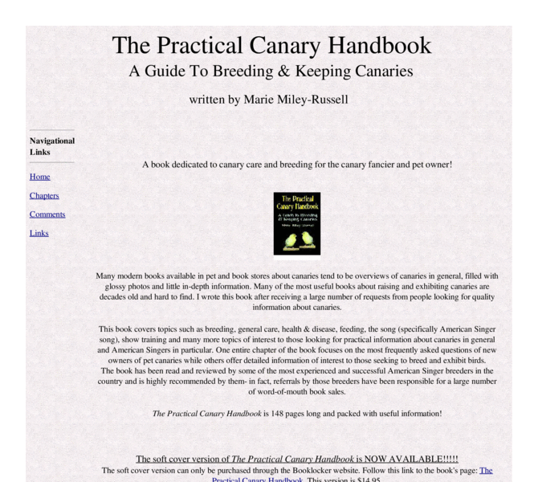

Previewing: The Practical Canary Handbook Previewing: The Practical Canary Handbook 
Use the left/right red arrow controls to navigate through this ring - Click the preview image to visit the member site.

Website for The Practical Canary Handbook - Breeding and Keeping Canaries. Book offers useful advice for anyone from the novice pet owner through the experienced breeder of canaries.
The Practical Canary Handbook owned by:
 kanarykrazy kanarykrazy
A member of the original webring since 02/09/2011.
|
|